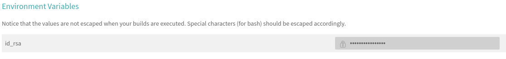

How deployment works
Patrick Schratz, Kirill Müller
Source:vignettes/deployment.Rmd
tic handles the deployment as follows:
-
When calling
travis::use_travis_deploy()(either directly or indirectly by usingusethis::use_ci()), a public key is added to GitHub repository under the “Deploy keys” section and the user receives an e-mail
-
A private key is encoded in base64 and stored in an environment variable on Travis, and installed in the ~/.ssh directory during the CI run

Initiating the deployment via a public-private key pair has the advantage that rights are granted to a single repo only and the setup process can be automated. Additionally,when calling
use_ci()a Personal Access token (PAT) is created (bytravis::create_github_pat()) to avoid the errors caused by Githubs download rate limitations.
pkgdown deployment
Today, it becomes more and more standard to have a pkgdown site for a R package which presents all the well-written vignettes and function documentations in a nicely styled web version. But this is only valuable if the information also reflects the most recent state of the repo. To not waste time on updating the site manually, tic takes care of an automatic deployment if contents have changed.
As an example, we show you how tic deploys on Travis. In the .travis.yml file:
before_deploy: R -q -e 'tic::before_deploy()'
deploy:
provider: script
script: R -q -e 'tic::deploy()'
on:
all_branches: trueLet’s break down what happens here:
-
Travis executes
tic::before_deploy()which will search for instructions regarding thebefore_deploy()stage intic.R.By default this stage looks like
if (Sys.getenv("BUILD_PKGDOWN") != "") { get_stage("before_deploy") %>% add_step(step_setup_ssh()) }This block calls the function
step_setup_ ssh()if the environment variable"BUILD_PKGDOWN"is set in the Travis build. That is just an example of an option that can be set to run certain commands (or stages) conditionally (see here for more examples). After the prerequisite of setting up an ssh key for the upcoming deployment has been finished, Travis is told to use a “script” (provider: script) for the deployment (which holds further instructions).
This “script” is calling
tic::deploy().-
All this is happening on every branch. If you want to restrict it to certain branches only, you need to set a condition in
tic.R.What happens now is that
tic::deploy()again searches intic.Rfor the “deploy” stage and then runs whatever is specified there.With the default template of
tic.R, the following will be executed:First,
step_build_pkgdown()will build yourpkgdownsite and afterwards (note thepipeoperator chaining the commands),step_push_deploy()takes care pushing the results to the repo. By default this will be thedocs/directory of themasterbranch.
Deploying to docs/ (master) or gh-pages branch
master branch
By default the deployment is done to the docs/ directory of the master branch. This option has the following advantages:
- You can have per-branch versions of your
pkgdownsite - Per-branch versions enable the possibility to have preview for pull requests via https://www.netlify.com/
A disadvantage is that the master branch will be cluttered by automatic commits triggered by Travis that push the changes of the pkgdown site to the master branch.
gh-pages branch
You can optionally set the deployment branch to gh-pages and then change the branch serving your site in the Github repo settings (change it to gh-pages). This option has the advantage
- to not have all the automatic commits from Travis in the
masterbranch -> thepkgdownsite will be “silently” updated in the background in thegh-pagesbranch.
A disadvantage is that you cannot have per-branch versions of your site and hence no pull request previews of the site.
To use this option with tic, specify branch = "gh-pages", path = "docs" in step_push_deploy(). As the site serving in this setting will use the root of the branch, the gh-pages branch will only consist of the public pkgdown files used to serve the site.
Conditional deployment
If you are running a build matrix or build stages on Travis, you want to run certain tasks only once during a build. The creation of a pkgdown site is a common task which applies to this.
Another situation in which conditioning comes in handy is when you want to deploy multiple files in different stages. You can restrict on which stage/job a task is executed with the help of environment variables. There are two ways to restrict the deployment with tic and environment variables:
- Setting the condition in
tic.R - Setting the condition directly in
.travis.ymlin the “deploy” section
Sometimes, env variables are implicitly set, e.g. when testing on multiple R versions (see example 2) (or by Travis itself, see Travis CI Meta-Information). There is no practical difference between both approaches. However, conditioning like shown here does only work for the “deploy” stage in .travis.yml. For conditioning other stages, you need to use the tic approach.
In the following we show an example for each the tic way as this is the suggested method to use for all conditioning:
Set the env variable BUILD_PKGDOWN in .travis.yml and add the condition in tic.R to only run the deploy stage when this env variable evaluates to TRUE:
jobs:
include:
- stage: stage1
env: BUILD_PKGDOWN=TRUE
before_install: R -q -e 'install.packages("remotes"); remotes::install_github("ropenscilabs/tic"); tic::prepare_all_stages(); tic::before_install()'
[...]
deploy:
provider: script
script: R -q -e 'tic::deploy()'
on:
all_branches: true
- stage: stage2
before_install: R -q -e 'install.packages("remotes"); remotes::install_github("ropenscilabs/tic"); tic::prepare_all_stages(); tic::before_install()'
[...]
deploy:
provider: script
script: R -q -e 'tic::deploy()'
on:
all_branches: truetic.R:
Committing single files
Function step_push_deploy() has the ability to only commit and push single files if they have changed during a CI build. This can be very useful for conditionally pushing documentation files like NEWS or man/ and NAMESPACE if these are automatically created via Travis. First, you need to make sure these files are created correctly by calling devtools::document(). Then, simply add the desired paths to argument commit_paths in step_push_deploy() and push to your desired branch (here master):
get_stage("before_deploy") %>%
add_step(step_setup_ssh())
get_stage("deploy") %>%
add_code_step(devtools::document(roclets = c("rd", "collate", "namespace"))) %>%
add_step(step_push_deploy(branch = "master", commit_paths = c("NAMESPACE", "man/*")))Applying this idea of course depends on your overall R package development strategy: Commit files like /man/ and NS directly or let them be created by Travis? An example project that uses the latter strategy is mlr.